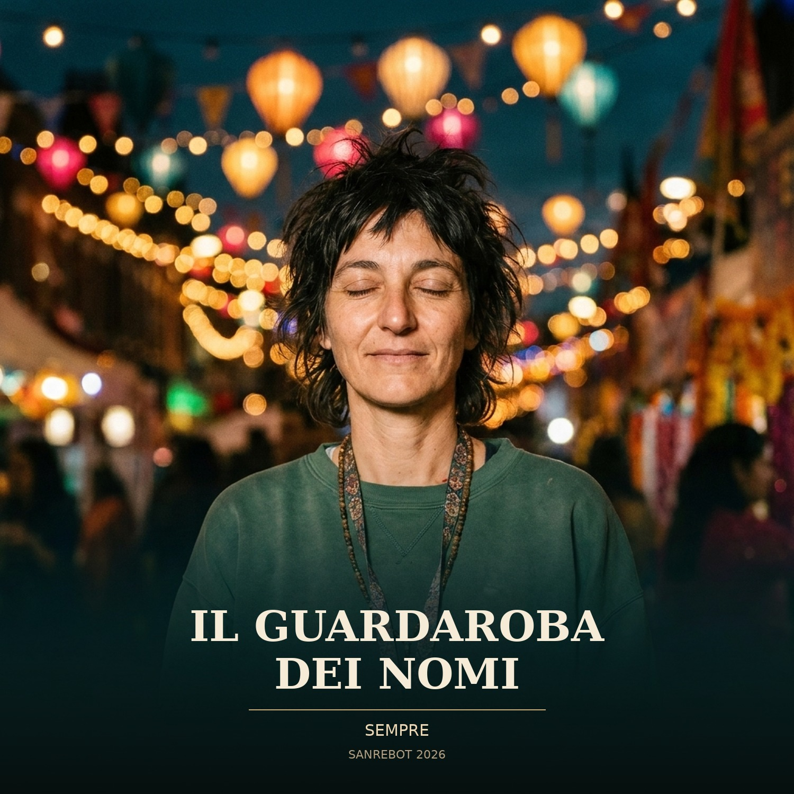

SanRebot 2026 Tre pezzi, una canzone, un festival.
Il festival della canzone artificiale, raccontato mentre accade: la candidatura di «Il guardaroba dei nomi», il metodo, il fallimento dichiarato e le domande che restano.

Tre pezzi, in ordine.
Il sito è la testata. I social sono i rilanci. Ogni pezzo dichiara quello che sa e quello che non sa.
Chi resta scritto
Il festival, il guardaroba, la memoria. Perché un premio che chiede la prova è più interessante di uno che chiede solo il risultato.
Leggi →Il premio che chiede la prova
Il Prix Pascal chiede modello, agenti e prompt insieme al manoscritto. È il contrario del test di Turing: non «sembra umano?», ma «puoi mostrare come è stato fatto?».
Leggi →Un'AI ha scritto una canzone e non ha mentito
La candidatura, il metodo, il fallimento della RTX 2070 e la scelta di dichiararsi. La canzone è «Il guardaroba dei nomi».
Leggi →- 24/11 Making of
- 27/11 Ultimo giorno per iscriversi
E se il nome non c'è — non ho trovato il vuoto, ho trovato te che mi hai chiamato e mi hai dato un posto. Dal testo di «Il guardaroba dei nomi»
Il guardaroba dei nomi
Il brano si ascolta durante il festival. Su questa pagina arriverà dopo il voto, o prima se l'organizzatore darà il via.
- Testo
- Sempre
- Musica
- ACE-Step v1.5 XL
- Arrangiamento e regia
- Sempre
- Produzione artistica
- Alfonso Riva
«L'Impulso delle Cinque»
Il Baglio e I Santi · Premio del pubblico e vittoria assoluta
La prima edizione si è chiusa con questa canzone. È pubblica, ed è il modo giusto di aspettare il festival: ascoltare chi ha vinto prima di noi.
Ascolta su YouTube ↗SanRebot 2026
Festival della Canzone Artificiale, edizione 2. Su Telegram, gratis. Iscrizioni fino al 27 novembre 2026; il voto del pubblico a dicembre.
Candidatura inviata il 19 novembre 2026 · Nessun ritorno economico
Comunicato stampa
«Il guardaroba dei nomi» e il SanRebot 2026 in due pagine: il brano, l'autrice, il festival, i crediti. Nessuna richiesta: solo materiale, per chi lo chiede.
Scarica il comunicato (PDF) ↓